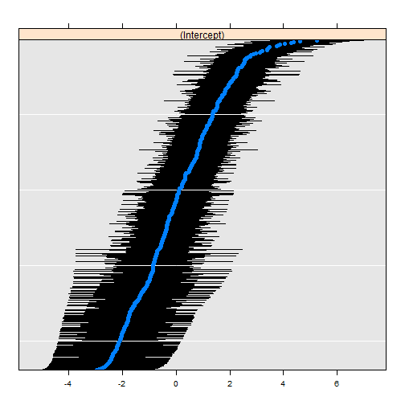

Cancer, Fantasy Football, and Three Level Mixed Effects Logistic Regression
Just a Little Tweet
This circuitous journey all started with a little tweet.
@ramnath_vaidya @timelyportfolio are there any examples out there that demonstrate how to add error bars to points with rCharts?
— Carson Sievert (@cpsievert) September 7, 2013
I started exploring how rCharts could make error bars, and I came up with 3 fine examples courtesy of this tweet
@vgoklani @timelyportfolio @ramnath_vaidya @nachocaballero Some ideas http://t.co/wHIHxD5ybx http://t.co/DLKNg2KCac http://t.co/y0wNv753qw
— Christophe Viau (@d3visualization) June 20, 2013
For the original use which I later found out would be fantasy football rankings, I thought this quartile plot would work nicely. I went to work making changes to the quartile plot so that it would play well with rCharts and also allow small multiples or facets.
And Another Little Tweet
Then this morning another tweet.
The UCLA Stats consulting website is a gift that keeps on giving. Great primer on mixed effects logit in #rstats http://t.co/0ZyUNj742i
— hjms (@hjms) September 27, 2013
and at the end of that very good tutorial I found a lattice dotplot that when flipped looked remarkably similar to my d3 errorbar.
R code from this fine article
UCLA: Statistical Consulting Group R Data Analysis Examples: Mixed Effects Logistic Regression http://www.ats.ucla.edu/stat/r/dae/melogit.htm Accessed 9/27/2013
#require(ggplot2)
#require(GGally)
require(reshape2)
require(lme4)
#require(compiler)
#require(parallel)
#require(boot)
hdp <- read.csv("http://www.ats.ucla.edu/stat/data/hdp.csv")
hdp <- within(hdp, {
Married <- factor(Married, levels = 0:1, labels = c("no", "yes"))
DID <- factor(DID)
HID <- factor(HID)
})
# estimate the model and store results in m
m3a <- glmer(remission ~ Age + LengthofStay + FamilyHx + IL6 + CRP +
CancerStage + Experience + (1 | DID) + (1 | HID),
data = hdp, family = binomial, nAGQ=1)
# print the mod results without correlations among fixed effects
# print(m3a, corr=FALSE)
dP <- dotplot(
ranef(m3a, which = "DID", postVar = TRUE),
scales = list(y = list(alternating = 0))
)
print(dP)
$DID 
It looked so close that I just had to try to replicate it. I scrambled to scrape the surface of Three Level Mixed Effects Logistic Regression just enough to extricate the data needed for the plot. I dug into the str of the lattice plot and examined the source code from lme4.
This little bit of code gets the data that we will need to plot.
## back into the x, y, and errorbar components by looking at
## both the structure of the dotplot and also the lme4 source
## https://github.com/lme4/lme4/blob/bf060a61168499d314b6248da8b2dc468e3af3c9/R/lmer.R#L2190
# str(dP)
## dP$DID$panel.args.common gives us the dotplot se which will be our error portion
## looking at the source from lme4 we get by using attr
## attr(ranef(m3a, which = "DID", postVar = TRUE)$DID,"postVar")
## dP$DID$panel.args$x or sort(ranef(m3a, which = "DID", postVar = TRUE)$DID[,1]) will be our y
## dP$DID$panel.args$y or just the index will serve as our x
## now that we know our x, y, and errorbar
## make a data.frame that we will use with rCharts
r <- ranef(m3a, which = "DID", postVar = TRUE)$DID
dfForPlot <- data.frame(
rownames(r), #this will be our x
r[,1], #this will be our y
as.numeric(attr( r, "postVar" )) #this will be our se
)
colnames(dfForPlot) <- c("id","intercept","se")
d3-ify in R with rCharts
I never thought I would say this, but the d3/rCharts piece is actually the easiest. Just specify a couple of parameters, and we have an interactive error bar plot.
## using very experimental version of rCharts
## require(devtools)
## install_github("rCharts", "timelyportfolio", ref = "test-speedimprove")
require(rCharts)
#set working directory to a local and change setLib and templates$script
#if going to github gh-pages repo not desired
path = "http://timelyportfolio.github.io/rCharts_errorbar"
#path = getwd()
ePlot <- rCharts$new()
ePlot$setLib(path)
ePlot$templates$script = paste0(path,"/layouts/chart.html")
#not the way Ramnath intended but we'll hack away
ePlot$params = list(
data = dfForPlot,
height = 500,
width = 1000,
margin = list(top = 10, bottom = 10, right = 50, left = 100),
x = "id",
y = "intercept",
radius = 4,
sort = list( var = "intercept" ),
whiskers = "#!function(d){return [d.intercept - 1.96 * d.se, d.intercept + 1.96 * d.se]}!#",
tooltipLabels = c("id","intercept","se")
)
ePlot
And since we are spoiled in R by facets in ggplot2 and strips in lattice, I just have to demo the small multiples capability of rCharts after a little bit of tweaking of the js code. I hope the facet = list(x = "variable") is simple enough, but soon I think rCharts will have a facet command to make it even easier.
#example of facetting
#let's add the HID to demo facets
r2 <- ranef(m3a, which = "HID", postVar = TRUE)$HID
#use our data frame dfForPlot as our starting point
dfForFacetPlot <- dfForPlot
#add another column variable
dfForFacetPlot$variable = "DID"
#combine the HID with DID to get long form(molten) data.frame
dfForFacetPlot <- rbind(
dfForFacetPlot,
data.frame(list(
id = rownames(r2), #this will be our x
intercept = r2[,1], #this will be our y
se = as.numeric(attr( r2, "postVar" )), #this will be our se
variable = rep("HID", nrow(r2))
))
)
ePlotFacet <- rCharts$new()
ePlotFacet$setLib(path)
ePlotFacet$templates$script = paste0(path,"/layouts/chart.html")
ePlotFacet$params = list(
data = dfForFacetPlot,
height = 500,
width = 1000,
margin = list(top = 10, bottom = 10, right = 50, left = 100),
x = "id",
y = "intercept",
color = "id",
radius = 4,
sort = list( var = "intercept" ),
whiskers = "#!function(d){return [d.intercept - 1.96 * d.se, d.intercept + 1.96 * d.se]}!#",
tooltipLabels = c("id","intercept","se"),
facet = list(x = "variable") #add y for facet grid
)
ePlotFacet
Thanks
As you can hopefully tell, I depended heavily on lots of folks to write this little post. Thanks to:
1. Ramnath Vaidyanathan - @ramnath_vaidya
2. Carson Sievert - @cpsievert
2. Iain Dillingham
3. UCLA: Statistical Consulting Group
4. lme4 Team
5. Mike Bostock
6. Everybody else that has contributed R and d3 examples online. I probably have looked at them.